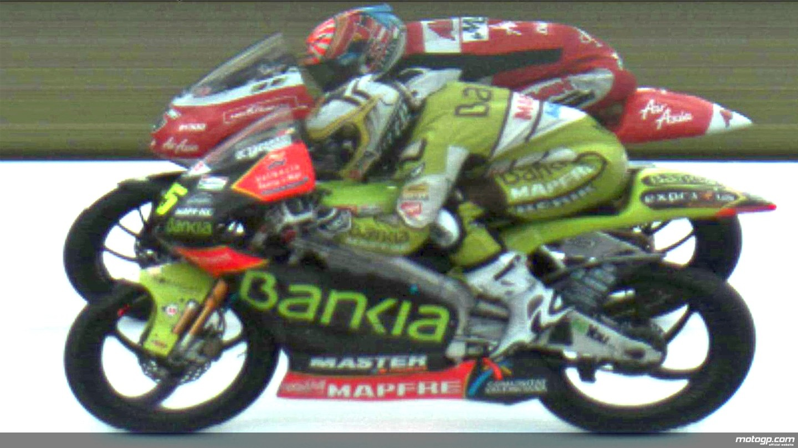

El Gran Premio de Alemania siempre ha sido sinónimo de emoción, público apasionado y giros inesperados. Pero en 2011, el circuito de Sachsenring fue escenario de algo aún más extraordinario: un final imposible de medir, incluso para la tecnología más precisa del Mundial.
En la carrera de la categoría 125cc, dos pilotos protagonizaron un duelo que ya es parte de la historia grande del motociclismo: el español Héctor Faubel y el francés Johann Zarco. Tras más de 39 minutos de batalla sobre el asfalto, ambos cruzaron la línea de meta… con exactamente el mismo tiempo: 39:03.214.
¿El sistema de cronometraje oficial, que mide hasta la milésima de segundo, no pudo registrar diferencia alguna. Incluso con el uso de la foto finish —herramienta habitual para desempates ajustados— no fue posible determinar con claridad quién había cruzado primero.
Ante esta situación excepcional, Dirección de Carrera recurrió a un criterio técnico del reglamento: en caso de empate absoluto, el piloto con la vuelta más rápida durante la carrera se considera ganador.
Y ahí estuvo la clave: Héctor Faubel había marcado una vuelta rápida superior a la de Zarco. Así, el español fue oficialmente declarado ganador del Gran Premio de Alemania 2011 en 125cc, mientras que Zarco, aún incrédulo, debió aceptar el segundo puesto a pesar de haberlo dado todo hasta la última recta.
